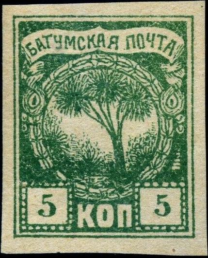
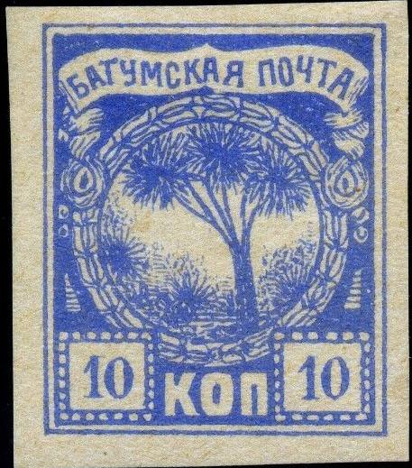
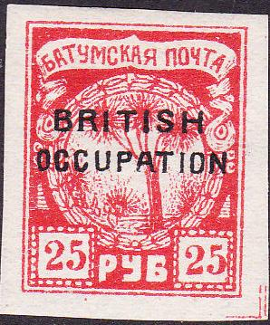

This type of the 5 kop has a dot below the tree branches.
Batoum
Note: on my website many of the
pictures can not be seen! They are of course present in the
catalogue;
contact me if you want to purchase it.

This type of the 5 kop has a dot below the tree branches.

Second stamp has a dot in the left bottom border (next to the
"10").

This 10 kop stamp has a dot below the "K" of
"KOP".
If my information is correct, the stamps with "BRITISH OCCUPATION" were re-engraved in six subtypes?



The 1920 overprint has guidelines around each block of 6 stamps.

Block of 25 Kop stamps, note that the subtype is repeated in
blocks of 6 (i.e.2 rows and three columns). This can easily be
seen by inspecting the "25"s in the bottom corners.

Block of 10 Rub 1920 stamps with guidelines around each set of 6
stamps. Specialists distinguish 6 subtypes (repeated in the
sheet). For example, the second stamp in a set of 6 has a white
line which connects the upper label to the frameline above it.

Another example for the 7 Rub.
Stamps - Timbres-poste - Briefmarken


{kind=link}
{kind=link}
{kind=link}
{kind=link}